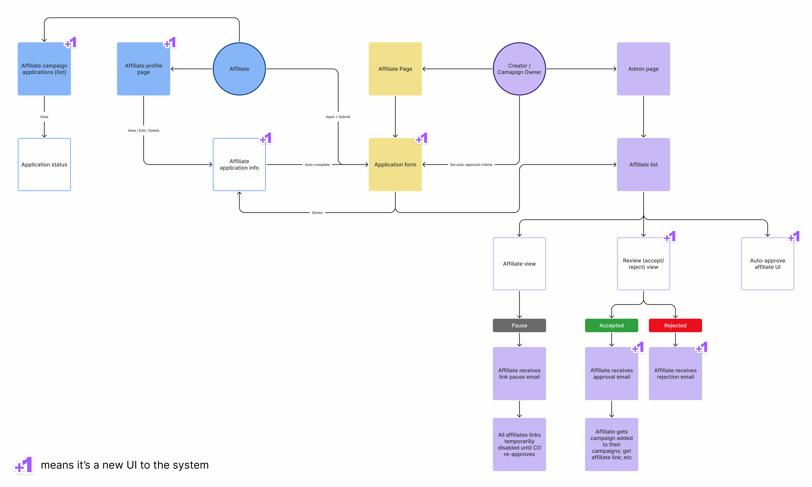
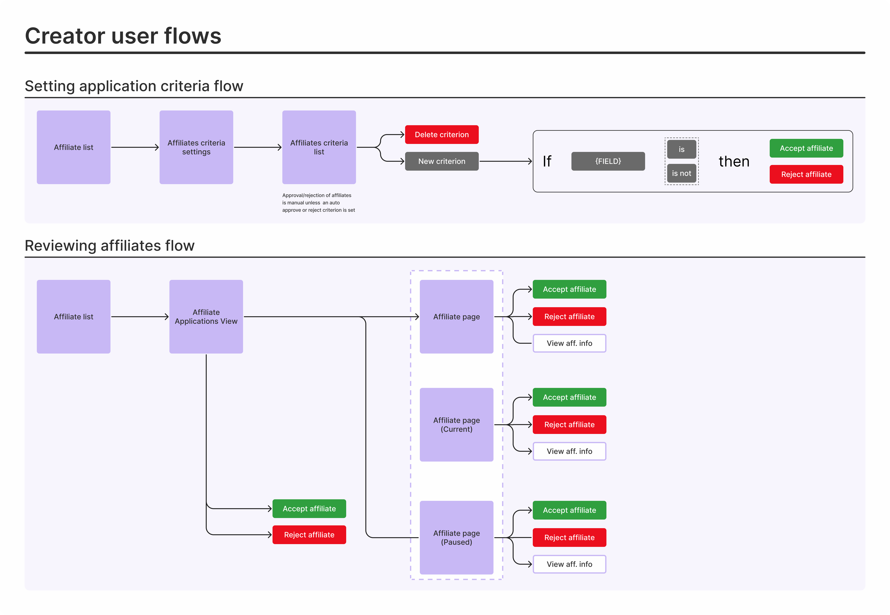
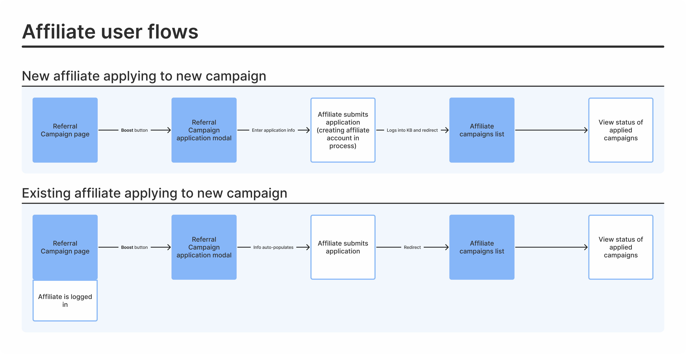
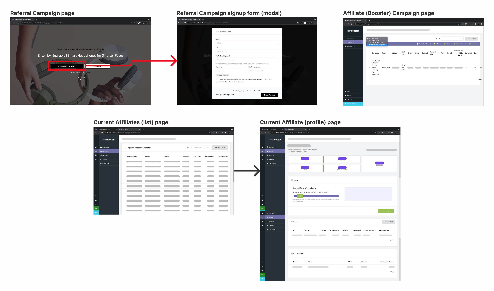
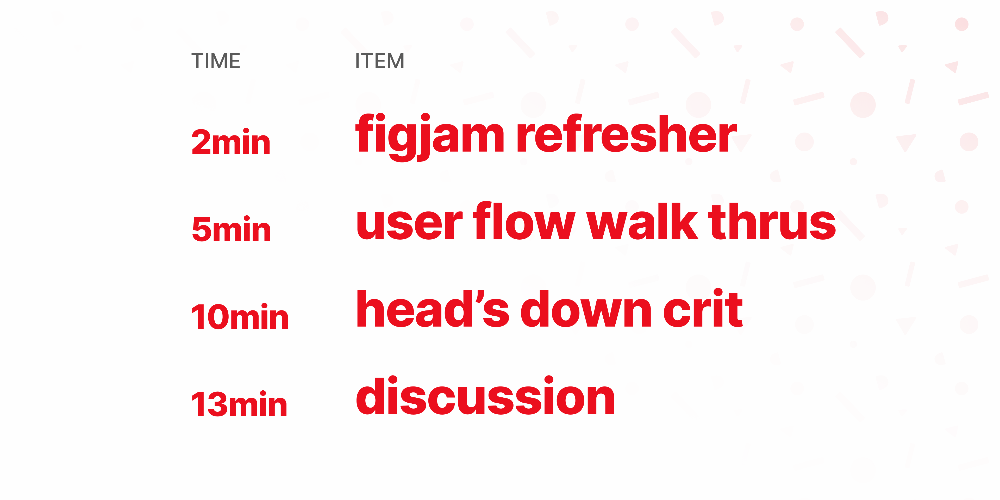
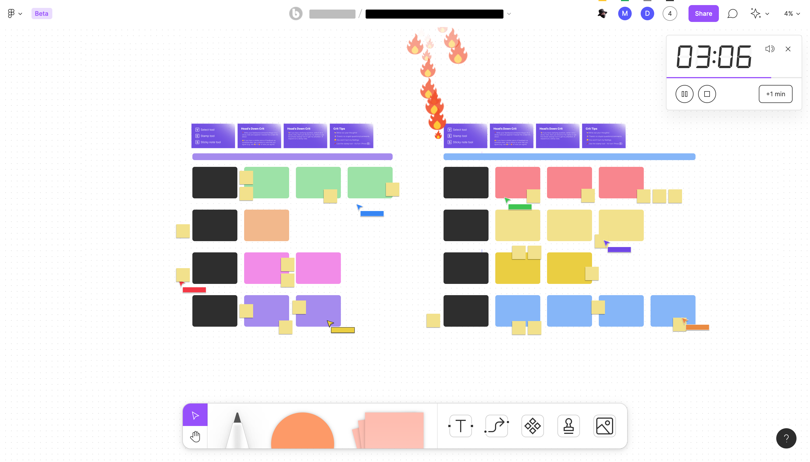
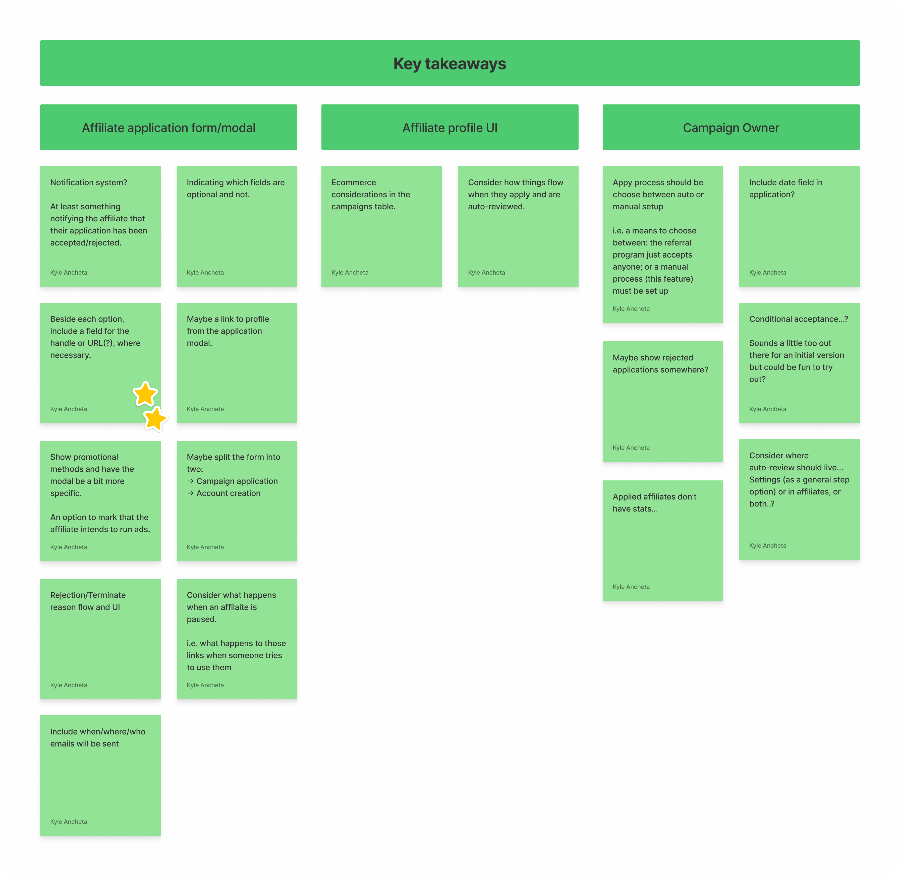
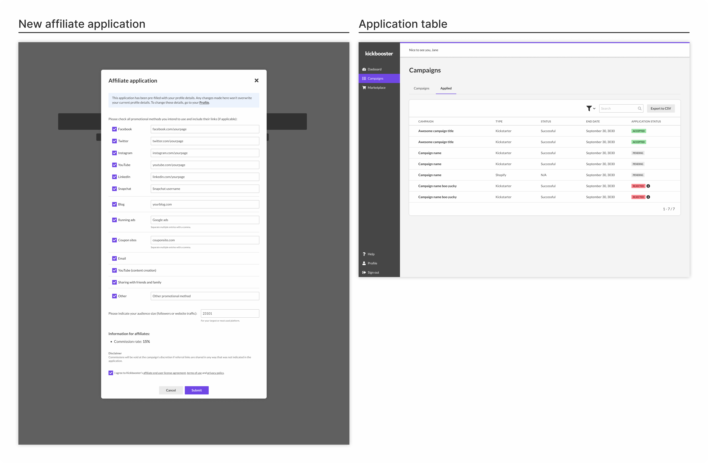
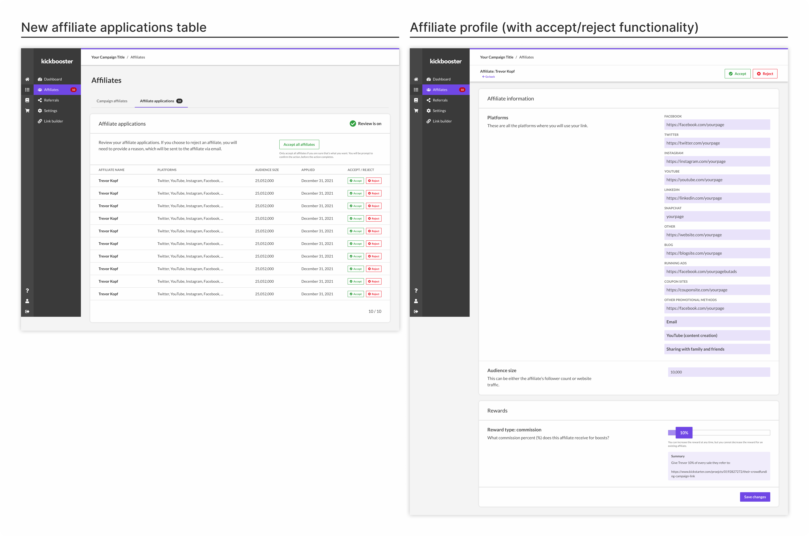
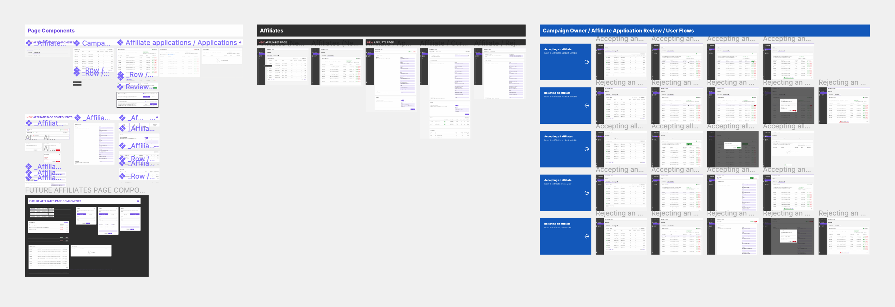

Introduction
Kickbooster's Affiliate Tool allows creators to further market their crowdfunding campaign through their backers, influencers and partner networks. It incentivizes these groups to leverage their own networks and promote the campaign, in exchange for a percentage of the sales from received pledges. This tool is what gave Kickbooster its name, and is loved by creators and affiliates alike: creators receive more traffic and pledges to their campaign, and affiliates can cash in just by promoting the campaign.
Since its creation, the tool hadn't seen much development because it was in a comfortable spot: it worked and it made money. However, issues arose for a few creators, surrounding who their affiliates were. These creators didn't want everyone promoting their campaign and the tool didn't allow for hand-picking which affiliates would be allowed to promote the campaign. This led to a few high-profile creators dropping the tool and seeking alternative solutions.
Problem
Kickbooster's Affiliate Tool didn't give creators control over who their campaign affiliates could be. Anyone could simply sign up to be an affiliate for any crowdfunding campaign, and profit from tossing their affiliate link anywhere around the internet. This was problematic for creators because it could ruin the campaign and creator's image. Creators want credible influencers and genuine backers promoting their campaign—not just some internet stranger who will throw their referral link on a coupon site.
Project Details
This problem had been known by the product team for some time, but this project only became a priority shortly after the loss of a key creator. Due to the priority and urgency of this feature, the project time had to be short and the scope decreased as the feature was further explored.
| Timeline | 3 Months [June 2021 - August 2021] |
|---|---|
| Team | - 1 Designer (Me!) - 1 Product Manager - 3~4 Developers |
| Other Contributors | - Kickbooster Team (Team Critique) - Bold Design Team (Design Team Critique) |
Business Requirements
The solution to this problem was simple: give creators control over who can be a campaign affiliate. Perhaps more time could have been spent understanding the problem more but this didn't seem necessary given our team's collective understanding—it's been a known problem—and the time crunch we were under. Over the course of months, the product manager had collected user feedback and requirements for this feature and had turned them into user stories. This spearheaded the design process as my job was then just understanding those requirements, coming up with a design, and refining it.
Here are a few sample stories, for both user types, that our product manager put together:
Affiliate stories—Sample
- An affiliate needs to provide more information about themselves when signing up for a referral program
- An affiliate needs to be able to update their information in their profile
- An affiliate needs to have a way of viewing their application's status
Creator stories—Sample
- A creator needs to have a way of viewing a summary of the affiliates that applied to their referral program
- A creator needs to have a way of accepting or rejecting an affiliate
- A creator needs to be able to provide a reason for rejecting an affiliate's application
Mapping out the Problem
To synthesize these requirements and better aid my UI exploration, I turned these stories into a system diagram, and a series of user flows. The diagram was helpful to view the feature as a whole; to see where new UI will be introduced, which parts off the app need to be changed and what changes will affect which parts of the app.
From this diagram, I produced a series of user flows. There were two user types for these flows, one from the creator's perspective, and the other from the affiliate's.
 As I wasn't entirely familiar with the referral app UI at this point, looking at the current UI was an important step before moving on. The structure of those pages was a limitation, since I couldn't veer too far away from the current UI, as that would increase development time.
Project Output
A few minor changes aside, there was one main addition to both user type UIs. For affiliates, a means of including more information when signing up for a campaign, and for creators, a new table to view and action on affiliate applications.
Project Constraints
The biggest constraint we had was time, which affected the project in two ways:
No usability testing
With little time to plan out, collect and synthesize external user feedback, we had to forego usability testing. Often, the biggest challenge is finding ideal users to test with, and given the urgency of this project, finding users to test with was something we couldn't allocate time to. Though, to help alleviate this, I relied heavily on the feedback of others during the critique sessions. Of course, there's no replacement for actual usability testing but having other multiple opinions on the matter was invaluable.
Decreasing scope
As the project progressed, we realized we planned too broadly. There were features we wanted to include but had to strip away, in order to meet the project deadline. This narrowing of the scope ultimately lead this project to a very simple form—which, isn't a bad thing. Having a simple version that does the job (well) would allow for faster, future improvements.
Project Outcome
The outcome of this project was to give creators control over who can become an affiliate for their referral campaigns. This first version of the feature ultimately took the simplest form of that, as to not only ship the feature faster, but to have solid foundation that could be built on in the future.
Solution Exploration
With the users flows and the current UI references, I was in a good spot to start exploring the new UI for this feature. This often differs project-to-project, so for this particular feature exploration, the process looked something like this:
- Start with what we currently have
- Add the components or parts needed to satisfy the requirements
- Clean up the design
- Think what could be better
- Repeat—a few times, or until I'm just stuck on step 4
Once I go through and feel finished with this process, my work is due for a crit. Sometimes I'll request feedback during that process, but this time around, I had time to set up a more formal design critique.
Feedback Sessions
Around this time, FigJam was recently released and I was excited to try a new critique format that I saw from a Figma video. I'd love to get into the format of the critique, but in short, this format allowed for more feedback in a session with lots of people and could highlight discussion areas of the topic being presented. For these design critiques I had laid out the various user flows of the feature, along with a few prompting questions to help people get started.
I conducted about three rounds of feedback for this feature, each with a certain group: one with the bold design team, one with the non-product Kickbooster folks, and one with just my product team. I generally seek feedback from each of these groups separately, in order to attain various perspectives. From the Bold design team, I get that general design and user experience lens; from the Kickbooster non-product team, I get that support and sales lens; and from my product team, I get the technical considerations and feasibility lens.
I relied heavily on these feedback sessions, as we didn't have the time to conduct full usability sessions. Even though it can feel like I'm "done" designing, I always know there's something that could be improved. Then surely enough, each of these sessions brought new insight, points of consideration and minor improvements that I hadn't considered.
"With little time to plan out, collect and synthesize external user feedback, we had to forego usability testing ... Of course, there's no replacement for actual usability testing but having other multiple opinions [via critique sessions] on the matter was invaluable.""
Once I had gone through the session with the product team, that's when we had to reconsider what would be a part of this initial version. This particular session gave insight into what would be technically feasible. Given our timeframe, we realized not everything we wanted could make the cut.
Narrowing Scope
Led by the product manager, a few features needed to be cut in order to meet the project deadline. These left-out features were all on the creator side and included: the rejection list view, the report button, and the auto-review functionality. The former two—the rejection list and report button—were dropped because the feature could still carry on as a whole without them. The most basic version of this feature didn't need them, though they would have been nice to have. As for the auto-review functionality, we deemed that this was too complex to bake into this first version of the feature. Without an opportunity to properly test its functionality, we were hesitant to follow through with it and it was cut from the scope.
Solution
Final Mocks
There's many components and pages that make up this feature, but the two most important pieces were the new signup page for affiliates and the affiliates application table for creators.
 Dev Handoff
Design documentation and developer handoff is a topic I'm very much into and always looking to improve on. I try to be as thorough as I can and include as many details for the developers. Of course, Figma has a lot of those development details built in, but certain UI and UX behavior isn't always obvious unless it's demonstrated in some fashion.
In the current stage of my process, I'll usually lay out the main pages of the UI in the center, lay out the page components to the left of the canvas, and lay out the user flows (of the page) to the right. My goal with this is to reduce confusion and ensure that the developers on my team understand exactly how to build the feature.
Throughout the development process, I'll still get asked plenty of questions from the developers and QA about the feature. Sometimes they're things I can easily point out on the page, and other times, they're UX-related things I hadn't fully considered. In the case of the latter, I'll take time to think about it more and then go over it with the developer who brought it to my attention. Those are usually annoying, though that annoyance is aimed at myself for letting something slip. In either case, they're always a good learning opportunity, letting me know what to look out for the next time around.
Future
Because this feature shipped in its simplest form, there's plenty of room for new features and improvement. Some of those are known, which would be the features we had to cut, and some we'll have to wait and seek out. We're monitoring the feature's usage and checking how users are using the feature. For the latter, some questions we may have include:
- Since release, how many creators are using the feature?
- How often do creators simply accept all applicants compared to manually reviewing each application?
- What are common reasons why creators reject affiliates?
That'll be a rally point in the future, for when improving the feature can be looked into. For now, it's in a good spot for creators to use.
Project Reflection
I'm quite proud of how I approached this project. It's one of the first few projects where I felt like I did things the "right" way. Of course, I didn't get to do everything I wanted—mainly usability testing and walking actual users through my design (i.e. my best guess)—but given the time I had to complete this, I'm pleased with how things went. There's three areas that I improved on or think I did well in:
Understanding the problem
This is arguably the most important thing when it comes to product design. There's never a lack of this in my approach, but I liked how I took my time with understanding and gaining full context of the problem before beginning the solutioning process. For this, this was diagramming the solution; mapping out the user flows; and seeing what parts of the app would be affected.
Design critiques
I was very pleased with how those critique sessions went and how I ran them. The new format was great in getting feedback from a lot of people in a short amount of time. There was a fair bit of overhead, in setting up the figjam files for it, but it was well worth the time spent given all the quality feedback I received from it.
Dev handoff
This project featured the next iteration of my figma organization and I think it's finally in a satisfactory spot. That is, I feel like there aren't too many holes in how I go about laying things out. The main addition this time around was including user flows right on the canvas of the main mock. As well, I think I did a better job of listing out all the states of every page and component.
I think having the time to conduct usability tests would have made this project "perfect," by which I mean that that was the only thing lacking from this project. Usability testing definitely would have given myself and the team more confidence in that we're moving in the right direction. I only had my intuition and the opinion of my team members that this feature was on the "correct" path, which, I think was enough for this project.